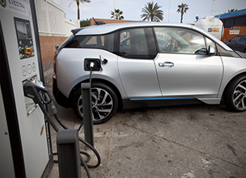
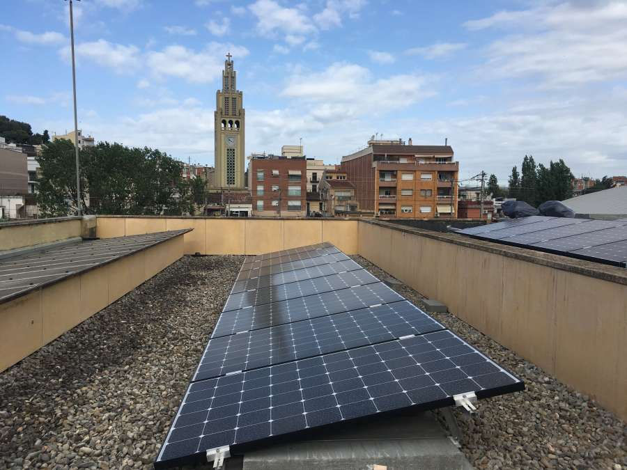
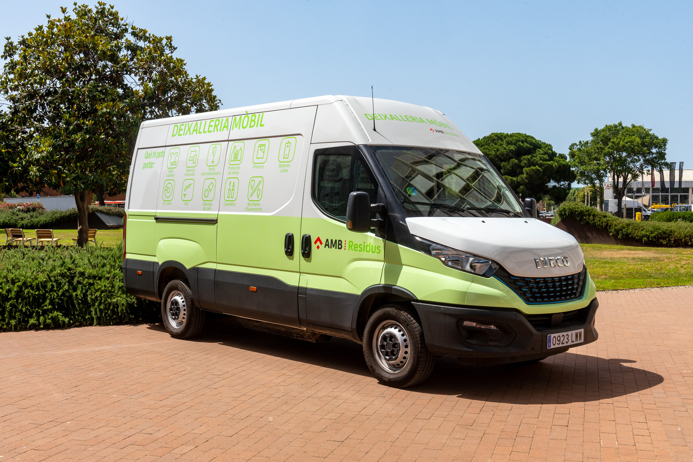
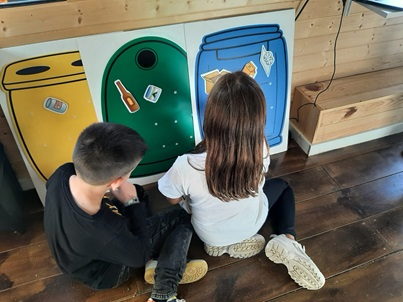

Medi Ambient
Ajuntament Montcada i Reixac
Mesures medioambientals
L’Ajuntament de Montcada i Reixac està compromès amb la sostenibilitat i la protecció del medi ambient. Diverses iniciatives busquen reduir l’impacte ambiental, fomentar la consciència ecològica i millorar la qualitat de vida de la ciutadania.
- Implementació d’energies renovables
- Creació de punts de reciclatge
- Programes d’educació ambiental
- Promoció del transport sostenible
- Taula kg de residus per any
Implementació d’energies renovables
El municipi impulsa l’ús d’energies netes com panells solars en edificis públics i punts de recàrrega per a
vehicles elèctrics. Aquestes mesures contribueixen a reduir el consum d’energia fòssil i les emissions de CO.
L'Àrea Metropolitana de Barcelona (AMB) ha començat les obres d'instal·lació d'una estació de recàrrega per a
vehicles elèctrics al carrer Tarragona, cantonada amb Pla de Matabous, davant de Montcada Aqua.
L'actuació s'emmarca en el conveni signat entre l'Ajuntament de Montcada i Reixac i l'AMB per al
desplegament del Programa de Mobilitat Sostenible, que inclou un subprograma de promoció de l'ús
del vehicle elèctric i, entre altres mesures, la col·locació de deu estacions de recàrrega per a
vehicles elèctrics a deu municipis metropolitans.
L'estació montcadenca disposarà d'un punt de recàrrega ràpida tipus multimode, que permetrà
realitzar l'operació en aproximadament mitja hora (la recàrrega domèstica dura unes vuit hores),
i un punt de recàrrega per a motocicletes elèctriques.

Projecte executat per l'AMB consistent en la instal·lació de plaques solars fotovoltaiques a l'edifici de la
Brigada municipal i a l'Escola el Viver. La instal·lació superarà els 150 kwp instal·lats.

Creació de punts de reciclatge
Montcada i Reixac compta amb diversos punts de recollida selectiva per a vidre, plàstic, paper i matèria orgànica.
A Montcada disposem d'un servei mòbil que cada dia se situa en un barri diferent.

Programes d’educació ambiental
Els centres educatius reben tallers i activitats sobre medi ambient, fomentant la concienciació
des de la infància. També es realitzen campanyes de sensibilització per a la ciutadania
sobre temes com la reducció de residus i la cura de l’entorn natural.
Visita Ecotruck
Aquest espai s’orienta a la sensibilització ambiental i la promoció de valors sostenibles,
mitjançant la realització de tallers i activitats dirigides a l’alumnat de
primària i secundària dels centres educatius de Montcada i Reixac.

Promoció del transport sostenible
Per reduir l’ús de vehicles contaminants, l’Ajuntament promou:- Carrils bici i bicicletes públiques.
- Transport públic eficient i accessible.
- La Zona de Baixes Emissions (ZBE), que limita l’accés dels vehicles més contaminants al centre urbà.
Kg de residus per any
| 2020 | 2021 | 2022 | 2023 | 2024 | 2025 | |
|---|---|---|---|---|---|---|
| Paper / Cartró | 10000 | 12150 | 12300 | 13000 | 13100 | 13500 |
| Vidre | 6500 | 7200 | 7500 | 7800 | 8000 | 8500 |
| Plàstic | 15500 | 16000 | 17500 | 17200 | 16500 | 16600 |